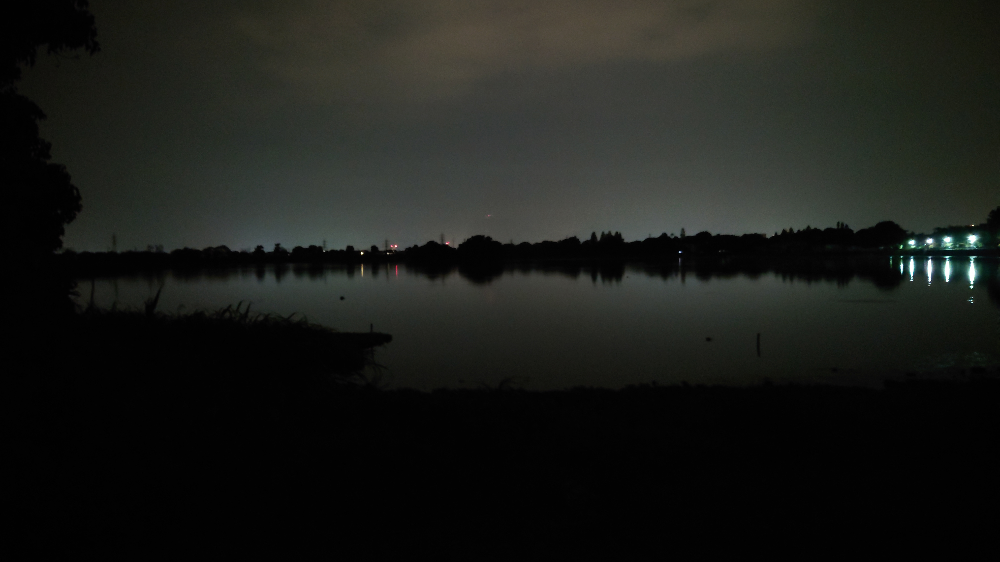

こんにちは、ザクザク食感です。
上京してから初めて実家に帰省した。
1年半ぐらい帰っていないので、実家に着くまでずっと緊張していた。
なるべく移動費を節約するために成田空港からジェットスターで帰ったので移動に4～5時間かかった。ただでさえ長い移動時間が無限に感じた。
京成本線と成田エクスプレスの中間みたいな電車を走らせてほしい！！！（アクセス特急とかいう車両がすでにあるらしいけど全然走ってない）
熊本に着いて、空港から家までの道がすべて知ってる道で面白かった。バスを降りて実家の近くまで歩くともっと知ってる道が出てきてもっと面白かった。
実家に着くと父親だけが家にいた。特に連絡もしていなかったので驚かれた。
今回帰省しようと思ったのは、家族に病気のことを伝えることと家族が今まで何を思っていたのかを聞くことが目的だったので、家に父親しかいないのは都合がよかった。
父が家に帰らずにずっと働いていたのはなぜか聞くと、「ワーカホリックなんだよ」と言われた。
（前の記事にも書いたかもしれないけど）幼少期から母の意向で塾に通わされていたので、それにかかる費用が家計を圧迫している自覚があった。
父は夜中に帰ってきてお酒を飲んで気絶するように寝て、明け方には仕事に出かけることをずっと繰り返していたので、あまり話せた記憶がない。父がそんな生活の何に生きがいを感じているのかずっと謎で、自分のせいで父の時間を奪ってしまっているのではないかと思っていた。
だが、父が言うには残業代なしでやりがいのために働いていたらしい。そうしなければやっていられなかっただけだから、お前は気にするなと言われた。
その言葉は僕の意図を察して気遣って出てきた言葉なのかもしれないが、そんなに器用な人間ではないと思うのできっと本当なんだと思う。変な人～～～！！！！！
父は母とはずっと冷戦状態だし仕事しかしていないので、僕のことを金食い虫だと思っていると思っていたが、そう思っていたのは母だけだったらしい。
今まで父が僕のことをどう思っているかについて散々悩んでいたのに、ただ無口で仕事が大好きな人間だったというオチだった。もっと早く聞くべきだった……
その後母が帰ってきて、僕が帰ってきたことを喜んでくれたが、僕が知らない男の人と旅行に行くとかで2日は帰らないと伝えられた。もう知らない……
熊本にいる頃によく行っていた湖に行った。
何も変わっていなかった。

あまりにも同じ景色でウケた。
湖の周りをぐるぐる徘徊していると、昔ここにいたときの記憶がそのまんまの形で出てきた。
漠然とした生きづらさ（病気だったけど）で悩んでいて、具体的な内容はぼんやりしか思い出せないけど、薬のおかげでしばらく感じていなかった心がキュッとして脳天が冷えて引っ張られる感覚がそっくり再現された。
そのとき聞いていた曲もそのまま再生されて、今聞いている曲をかき消すように脳内で流れていた。
今のこの感覚もまた記憶されていくのかな～と思ったけど、こういうのはなんでもないような瞬間を妙に覚えているものなので、どこが記憶に残るかはわからない。
当時感じていた生きづらさみたいなものは薬の力でかなり克服できてしまったので、どこにも行けなかった僕の逃げ道として存在していたこの湖はもうただの道でしかなかった。
でもここは何も変わっていなくて、僕が勝手に変わっただけだった。
僕がどこに住んでいても躁でも鬱でも、何にも関係ないまま世界は進んでいるのを実感して、それがすごく救いに感じた。
僕を拒絶するわけでも受容するわけでもなくてただそこにあるだけで、世界は自分の捉え方次第でしかないことがわかった。
僕は僕が思っているよりなんでもなくて、世界に何も関わっていなくて自分の見える範囲でしか生きていないのが、虚しくもありつつ救われたような気持ちになった。

当時よく飲んでいたハイボールを買って飲んだけど、あんまり美味しくなかった。
それでは、さようなら。